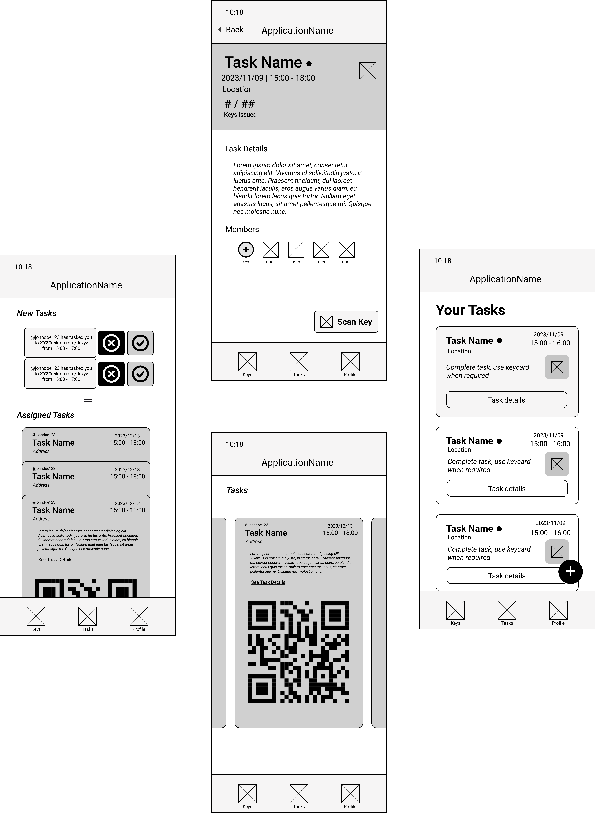
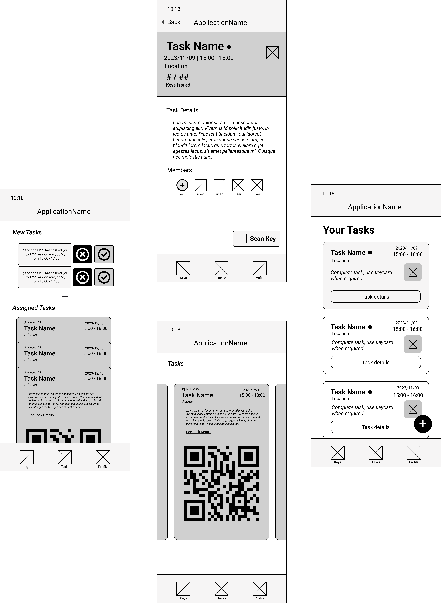

DURATION: September 2022 - Present
PLATFORM: iOS
COLLABORATORS: Markus Church
During the fall season of 2022. While working part time at a retail store during my undergrad. I found myself thinking about a more efficient way for coworkers to keep better track of each others tasks and better regulate the circulation of important information or equipment.
This spawned the concept for LEGION. An app that allows members to create and assign tasks, while also providing sensitive data or tools required for the task conveniently.
Methods
Full-Stack Development
Prototyping
Surveying
Agile Methodology
Semi-structured Interviews
User Tesing
API Design
Wireframing
Tools
Figma
VS Code
Trello
Firebase
SwiftUI
Figma
Legion provides task management and sensitive data/tool circulation for teams. Managers can generate exclusive keys via QR codes that
allow workers to access certain locations or items to complete their assigned task. As the work day goes by all stakeholders can actively track task progress and keep track of who has accessed certain items.
Sprint 1: Ideation
Employers may find keeping tabs on all members and equipment can be tedious and unpredictable. Making sure only authorized personnel are completing certain tasks and have access to specific equipment can become a headache
and spark difficult confrontations. Legion can cut out those uncomfortable situations by providing exclusive QR codes to authorized personnel, allowing only those specific few access to sensitive information or tools. The host that is dealing out these QR codes and tasks can actively
track all progress and observe what every employee is doing. Ultimately, providing a transparent workplace experience for employees and management.
Sprint 3: API & Prototyping
Employers naturally want to keep employees focused on their designated tasks, while also monitoring employee progress and regulating access to sensitive equipment or information.
This application provides these capabilities to employers all from their mobile device. Ultimately, cutting out unnecessary confrontations between management and employees. As well as making sure
that both stakeholders are held accountable for their actions.


Sprint 4: Version 1 of the App
For Legions first build, devloping the task hosting side as well as the task recepient side of the app was prioritized.
All messaging and social capabilities were not devloped and were shelved for V2.
Sprint 5: User Testing of V1
User testing consisted of 6 potential end-users, this testing yielded valuable data on how users found navigation in V1.
Various UI bugs were uncovered, as well as some unintuitive logic. To be specific, when users would double tap onto a task card. They would be sent to
the horizontal task card view and would then find themselves lost on how to get back to the stacked card view. Some users also found that the application lacked any sort of memorable validation when they changed or removed
task details. Pointing to a constant need of responsiveness/ feedback from the app whenever they interacted with it.
When designing the first iteration of Legion, I was inspired by well established mental models from other popular applications. Like Google Pay and Venmo. Many users naturally found themselves right at home when using Legion because of the familiar
feel of the UI. Using wallet-like stacked cards and floating action buttons to be specific.
Legion Poster
The ultimate task management solution for teams operating with sensitive information and equipment.

 
